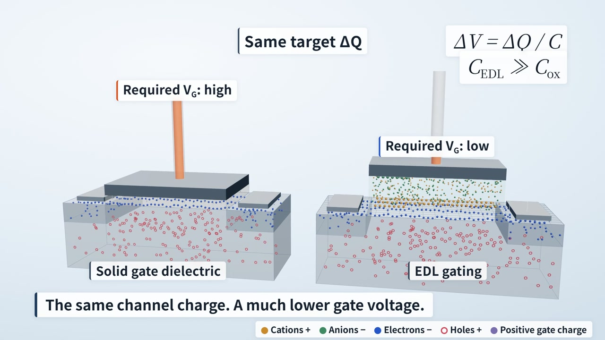

Films that explain how something works
Each film takes one mechanism, states what it does and does not claim, and explores one production technique. Film, source and method are published together.
- 01
Mechanism and limits
Write the causal chain, and the conditions under which it holds.
- 02
Pictures that carry the argument
Every effect marks something that is actually happening.
- 03
Time as the only input
Every frame and sound cue is computed from it, so the film stays reproducible and easy to revise.
Electric-double-layer gating
The same change in channel charge.
A lower gate voltage. Why?
One device, followed from a transistor cross-section into its 3D electrolyte interface and back. With the target charge held fixed, the comparison isolates gate coupling.
MCP, Explained in Motion
An AI model can only write text.
How does it operate a program?
One request, followed from a program's window down through its layers and back. The model never touches the software: it reads text and writes text. Control comes from the program's own interfaces, which MCP packages as tools.
The reasoning behind the images

Give the comparison a clear meaning
Compare the voltage needed for the same change in charge. Keep low external voltage distinct from weak local fields, and gate-related stress distinct from source–drain failure.
Scientific scope →
Separate the mechanism from the standard
Control comes from a program's own interfaces and the code wrapped around them. MCP standardizes how that capability is offered. The film shows the layers first, and states the value of a standard once the loop is clear.
What MCP is, and is not →
One clock for picture and sound
The EDL film runs on a story timeline mapped to playback time. The MCP film runs on word timestamps from its AI voice, so rewriting a line moves every later cue. Either way, picture and sound read the same events.
The shared workflow →